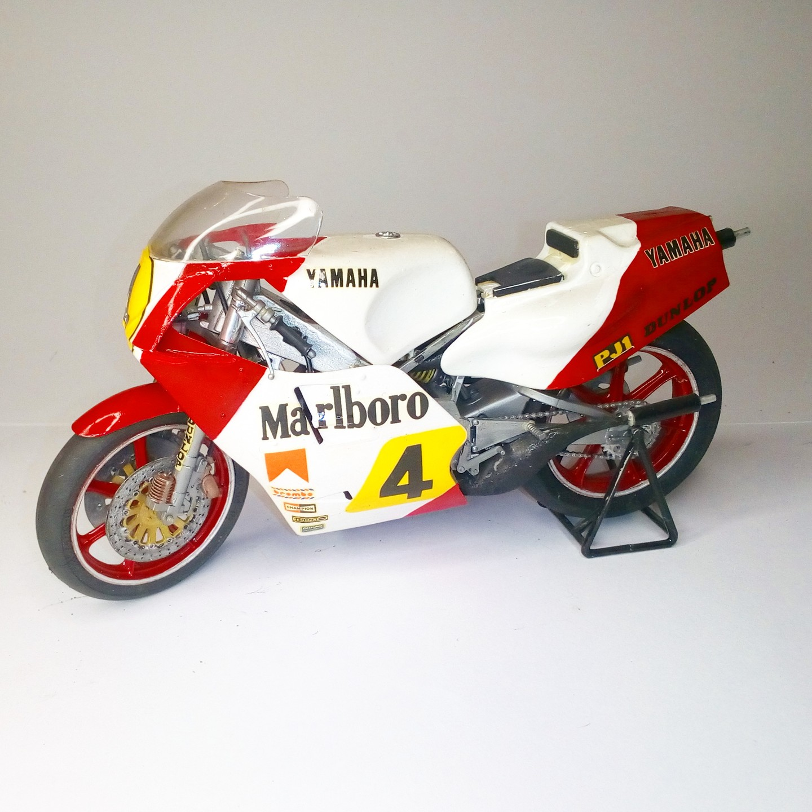

Moto · scale model archive
Yamaha YZR500 OW70
Yamaha YZR500 OW70 — Kit: Tamiya, Scale: 1/12. As raced in 1983 #1/12 #Tamiya

Photo gallery
English description
As raced in 1983
#1/12 #Tamiya
Descrizione italiana
Come corse nel 1983.
Moto · scale model archive
Yamaha YZR500 OW70 — Kit: Tamiya, Scale: 1/12. As raced in 1983 #1/12 #Tamiya
